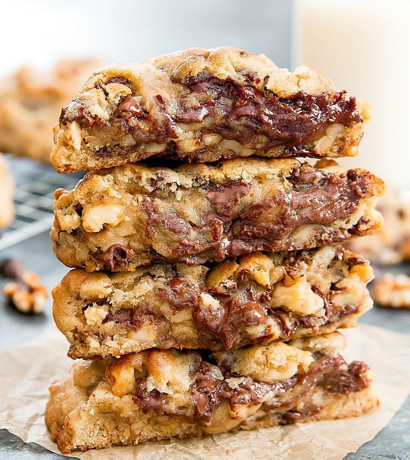

Levain Chocolate Chip Cookies

Description:
Levain Bakery has won countless awards from The New York Times,
TripAdvisor, and Yelp for its thick, crunchy yet gooey cookies. The bakery
is considered a New York City cookie destination. It offers four kinds of
cookies along with other baked goods. The chocolate chip walnut is the
most popular. These cookies are a copycat of the famous Levain Bakery
Chocolate Chip Walnut Cookies. I think my version tastes very similar to
the real thing, allowing you to recreate the famed New York City cookies
in your own home.
Ingredients
- 1 cup cold unsalted butter cut into small cubes
- 3/4 cup lightly packed light brown sugar
- 1/2 cup granulated white sugar
- 2 large eggs
- 1 cup cake flour
- 1 3/4 cup all purpose flour
- 1 tsp cornstarch
- 1 tsp baking soda
- 1/2 tsp table salt
- 2 cups roughly chopped walnuts
- 2 cups semi sweet chocolate chips
Steps
- Preheat oven to 410°F. Line two baking sheets with silicone baking mats.
- In the bowl of a stand mixer, add butter and sugars. Cream until light and fluffy, about 2 minutes. Since you are dealing with cold butter, start on low speed for about 30 seconds. Switch to medium speed for another 30 seconds and then high speed for 1 minute.
- Scrape down sides and bottom of bowl. Add in eggs. Mix on medium speed until incorporated.
- Add in cake flour, all purpose flour, cornstarch, baking soda, and salt. Mix on the lowest speed ("stir" function on my Kitchen Aid) until all the flour is just incorporated. Careful not to overmix.
- Add in walnuts and mix on the lowest speed for about 5 revolutions until walnuts are evenly incorporated into the dough.
- Add in walnuts and mix on the lowest speed for about 5 revolutions until walnuts are evenly incorporated into the dough.
- Remove dough from bowl and mix with hands a few times to make sure chocolate chips and walnuts are evenly distributed. Dough should be quite sticky.
- You can either divide dough into 8 equal pieces, or I prefer weigh out the dough. Each dough ball should weigh 6 ounces. You should grab the dough by the handful until you reach 6 ounces and lightly form a very loose ball. Make sure to keep it loose as the cookies should be airy and not compacted.
- Place only four cookies on each baking sheet, spacing them about 2 inches apart, so that they don't spread onto each other.
- Bake only one sheet at a time in the middle row of the oven, for about 12-13 minutes. The tops of the cookies should be a light brown and the dough should look cooked, but the cookies should not be fully set. Let cookies cool at least 15 minutes. This gives them a chance to set so that you can remove the cookies without them breaking and will also allow inside of the dough to cook a little more. Make sure you don't move the cookies before they are set. They should still be gooey inside even after you wait 15 minutes. Cookies are best eaten warm.